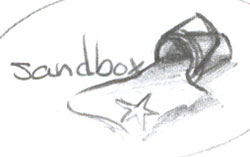
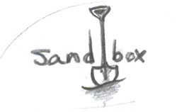

Completed Works
Web & Graphic Design
GUI Framework 2010–present
In the days before Twitter Bootstrap, I built a CSS and Javascript framework made up of reusable tool classes. The overall intent is for someone with minimal familiarity with HTML and CSS syntax to be able to apply these visual effects just by calling the classnames.
Twitter began their framework shortly after I finished mine. Several intelligent frameworks have been released since I came up with the idea for GUI. Many of them are better at what they do and the open source community has really accelerated their development and quality. OCC has been using GUI for a few years now and seems very satisfied with the power it gives them. It's not perfect, but it's my personal toolbox and I'm continually adding to and improving it.
That said, I still think it's worthwhile for every designer and programmer to attempt to create their own framework. The knowledge and experience you gain along the way is priceless.
{kind=link}
Adult Learners 2013
Sitelet: noun; the rendered result of the addition of a menu parameter to the index.aspx template file in order to override the global stylesheet with a local one of the same name as the menu's title in the CMS database, thus creating a custom look and feel without necessitating any manual code development.
Marketing has various priorities throughout the year where they need to advertise certain special programs in a unique way to a unique audience. To date, I've created several sitelets for OCC. Adult Learners is just one example.
The real achievement here is in the template file logic and proxy rules allowing GUI to integrate with the entire family of OCC websites. It isn't until something as simple as a sitelet is built that the value of all of this back-end work is really apparent. We've been able to satisfy 90% of Marketing's requests by using sitelets, freeing up more of our time for continuous improvement and new development.
{kind=link}
{kind=link}
Homepage 2012
This project was much more than just a new look for the College homepage.
I restructured the entire information architecture and back-end systems that drive all of OCC's websites. Research and planning took several months. Thousands of lines of code were removed, redundancies were eradicated, objects were created for reuse and deployed, and finally, a unified visual language for an entire family of websites was created.
With the launch of this site, OCC finally had what they needed all along: flexibility for change and adaptability for growth.
{kind=link}
{kind=link}
Community Education 2012
This is another example of a sitelet that relies heavily on the GUI Framework (Typography, Colors, BG_Banners, Grid, Modal, Verty, et al).
The previous version of the Community Education site had an unnecessarily obfuscated information architecture. I chose to flatten this one to increase the speed of the user finding the course they wanted. No longer do they have to know if Defensive Driving is filed under Personal Development or Youth Programs. I can list it in both places without any extra clicks.
{kind=link}
{kind=link}
Mobile 2011
The College asked for a dedicated mobile-friendly site to show that they were addressing the need. My long-term plan was to go straight into a Responsive Design approach, where every site would become device agnostic, but the College didn't want to wait.
We took the most frequently accessed tools from the Student site analytics as our starting point and created this pared down, task-oriented UI, focusing on speed and minimizing page sizes as much as possible.
{kind=link}
{kind=link}
{kind=link}
{kind=link}
Office of Admission2010
We spent several weeks analyizing an overly complicated admission process, working through dozens of whiteboard sessions to simplify things for the user. Whenever possible, we strove for simplicity. In the absence of simplicity we aimed for clarity.
In the end, this was more of a negotiation than a design project. Veteran college administrators have a hard time letting go of their mental models and it takes a bit of convincing for them to realize that the needs of the user are quite a bit different than their own.
This was the first OCC site to use the GUI Framework. Since its launch we've found and solved several new puzzles. It's showing its age and is scheduled for a redesign in Spring 2014.
{kind=link}
{kind=link}
Altavault Logo2009
From the client: "Altavault is secure cloud storage. We place particular emphasis on data integrity, accountability, and reliability. Iron Mountain in-the-cloud."
{kind=link}
{kind=link}
Christine Hanna Yoga & Bellydance Logo2009
Via email…
Christine: "The way I drew it is the "C" is like the left side of a heart while the line of the "H"" connects to the bottom of the "C" and bends around to make the other side of the heart, but the bottom of the "H" extends farther down so you can see the definition on the "C" and "H". […] the top portion on the "om" symbol at the top of it."
A few minutes of sketching…
Me: // I think I've got it… for the most part… am I close? //
{kind=link}
Christine: "Oh my goodness. I am in love, IN LOVE with that design! You took something that was in my head and made it so much better than I could even imagine! WOOWY WOW! I am so freakin excited! I don't even know what to say. I love it!"
Employee Intranet2008, 2007, 2006
Similar to the student site, we recognized the need for a location to store all of the information applicable to, or utilized by, College employees.
This site is due for a redesign in Fall 2013. We've learned a lot since it first launched and pulling it into the GUI Framework will give it a lot of flexibility and functionality that it currently lacks.
{kind=link}
{kind=link}
Student Intranet2008, 2007, 2006
When the College hired an outside designer in 2005 for a rebranding, they asked her to design a new website for the prospective student audience. During the build we realized that she forgot to find a place for all of the information pertaining to existing students and staff.
We threw together a quick single-page index of student tools and information and improved on that basic functionality as the years progressed. When this version of the site launched it received a very positive 80% satisfaction rating from students and staff.
The student site has gone through several iterations since 2005 and is the oldest site in the current family of OCC sites. We have it scheduled for a long overdue redesign in Fall 2013.
{kind=link}
{kind=link}
Sandbox Logo 2005
I designed this logo for a friend's work project. He described it as a "distributed, web-based text editor used for configuration and content management by academic librarians."
The branding is a bit off target as a sand box has nothing to do with what he described, but naming things is hard. The only other flaw I can find is that I ended up with the wrong kind of shovel for playing in a sand box. Despite being my own worst critic, I still kinda like the end result.
 {kind=link}
{kind=link}
{kind=link}
Skill Levels
Conceptualization
- Empathy for the User“I fight for the users” Tron
- UI Page-Flow/State Sketching
- Information Architecture
- Rough Concept Sketching
- Hi-Fidelity UI/UX Design
- Adobe Creative Suite
- Sketchup
Design Implementation
- HTML5
- CSS3
- Web Accessibility (508, 504, W3C)
- Cross-Browser/Platform Debugging
- Usability Testing
- Responsive DesignWorkin' on it
- Textmate
- SCSSWorkin' on it
Front-End Programming
- Ability to Think Like a Programmer
- Ability to Understand Relational Database Concepts
- JQueryWorkin' on it
- Chrome InspectorWorkin' on it
- Git/GitHubWorkin' on it
- Terminal
- Ruby Views
Other
- Ability to Play Classical Gas on guitar
- Ability to Play the 3rd Movement of the Moonlight Sonata
- Ability to Run a 5k While Fighting Off Zombies
Curriculum vitae
Employment
Onondaga Community College — Syracuse, NY
Internet Systems Specialist, Web Team Leader — 2005–Present
- leader of a 3-man web team consisting of a designer/manager (me), a .NET programmer, and a content manager
- responsible for:
- information architecture
- user experience
- visual design
- front-end development
- cross-browser/platform testing
- project management
- content management
- strategic planning
- planned and successfully led a 7 year web infrastructure overhaul–creating or redesigning/redeveloping 26 separate websites and applications
- created a CSS Framework and a series of JQuery scripts to enhance and support global visuals and interactions across a family of websites
- implemented a code and content organization strategy for universal, global, local, and local-override CSS objects
- collaborated on template logic to maximize code reuse and design flexibility to counter the limitations of a CMS
- guided other teams on issues of usability, design and accessibility
GMAC Insurance — Liverpool, NY
Claims Representative I — 2003–2005
Blue Willow Designs — Syracuse, NY
Co-Founder, Designer — 2000–2004
SUNY Upstate Medical University — Syracuse, NY
Web Intern — 2000
SUNY Geneseo — Geneseo, NY
Web Assistant, Publicity Manager, Graphic Designer — 1999–2002
HSBC Bank USA — Liverpool, NY
Customer Service Representative — 1999–2003
Education
SUNY Geneseo — Geneseo, NY
Bachelor of Arts — magna cum laude — 2002
Major: Art
Minors: Art History, Geography
Self-Education
A reader lives a thousand lives before he dies… The man who never reads lives only one.
Web & Graphic Design
- Remote: Office Not Required–Jason Fried, David Heinemeier Hansson
- Rework–Jason Fried
- The Visual Display of Quantitative Information–Edward R. Tufte
- Beautiful Evidence–Edward R. Tufte
- Visual Explanations: Images and Quantities, Evidence and Narrative–Edward R. Tufte
- The Elements of Typographic Style–Robert Bringhurst
- Meggs' History of Graphic Design–Philip B. Meggs, Alston W. Purvis
- Living with Complexity–Donald A. Norman
- Envisioning Information–Edward R. Tufte
- Seductive Interaction Design: Creating Playful, Fun, and Effective User Experiences–Stephen P. Anderson
- Thinking with Type–Ellen Lupton
- Mobile Design and Development–Brian Fling
- Search Patterns–Peter Morville, Jeffery Callender
- Content Strategy for the Web–Kristina Halvorson
- HTML5 for Web Designers–Jeremy Keith
- Designing the Obvious: A Common Sense Approach to Web Application Design–Robert Hoekman, Jr.
- Designing the Moment: Web Interface Design Concepts in Action–Robert Hoekman, Jr.
- The Design of Future Things–Donald A. Norman
- Logo Design–Taschen
- Web Form Design–Luke Wroblewski
- Emotional Design: Why We Love or Hate Everyday Things–Donald A. Norman
- About Face 2.0: The Essentials of Interaction Design - Alan Cooper, Robert Reimann, David Cronin
- Don't Make Me Think: A Common Sense Approach to Web Usability, 2nd Edition–Steve Krug
- The Design of Everyday Things–Donald A. Norman
Drawing & Visual Narrative
- The Illusion of Life: Disney Animation–Ollie Johnston, Frank Thomas
- Graphic Storytelling and Visual Narrative–Will Eisner
- Comics and Sequential Art–Will Eisner
- Reinventing Comics: How Imagination and Technology are Revolutionizing an Art Form–Scott McCloud
- Making Comics: Storytelling Secrets of Comics, Manga, and Graphic Novels–Scott McCloud
- Understanding Comics: The Invisible Art–Scott McCloud
- The Artist's Complete Guide to Facial Expression–Gary Faigan
- Cartooning the Head and Figure–Jack Hamm
- Perspective! for Comic Book Artists: How to Achieve a Professional Look in your Artwork–David Chelsea
- Constructive Anatomy–George B. Bridgman
Woodworking
- To Make As Perfectly As Possible, Furniture Making–Andre Roubo
- Furniture of Necessity–Christopher Schwarz
- By Hand & Eye–George Walker, Jim Tolpin
- Mouldings in Practice–Matt Bickford
- The Essential Woodworker–Robert Wearing
- The New Traditional Woodworker: From Tool Set to Skill Set to Mind Set–Jim Tolpin
- The Foundations of Better Woodworking: How to use your body, tools and materials to do your best work–Jeff Miller
- The Joiner and Cabinet Maker–Christopher Schwarz, Joel Moskowitz
- The Anarchist's Toolchest–Christopher Schwarz
- Made by Hand–Tom Fidgen
- John Gay, Or Work for Boys–Jacob Abbot
- The Perfect Edge: The Ultimate Guide to Sharpening for Woodworkers–Ron Hock
- The Workbench Book: A Craftsman's Guide to Workbenches for Every Type of Woodworking–Scott Landis
- The Workbench: A Complete Guide to Creating Your Perfect Bench–Lon Schleining
- Joint Book: The Complete Guide to Wood Joinery–Terrie Noll
- Understanding Wood Finishing: How to Select and Apply the Right Finish–Bob Flexner
Personal Enrichment
- Eat, Sleep, Poop: A Common Sense Guide to Your Baby's First Year–Scott W. Cohen
- Investing for Dummies–Eric Tyson
- The Bogleheads' Guide to Investing–Taylor Larimore, Mel Lindauer, Michael LeBoefu, John C. Bogle
- The Intelligent Investor: The Definitive Book on Value Investing. A Book of Practical Counsel–Benjamin Graham
- The Millionaire Next Door: The Surprising Secrets of America's Wealthy–Thomas J. Stanley
- The Way of Zen–Alan W. Watts
- The Art of Happiness–Dalai Lama
- The Art of Happiness at Work–Dalai Lama
- The Miracle of Mindfulness: The Classic Guide to Meditation by the World's Most Revered Master–Thich Nhat Hanh
- Tao Te Ching–Lao Tsu
- The Cruising Life: A Commonsense Guide for the Would-Be Voyager–Jim Trefethen
Entertainment
- A Memory of Light (The Wheel of Time)–Robert Jordan
- A Dance with Dragons (A Song of Ice and Fire)–George R. R. Martin
- The Prince of Nothing trilogy–R. Scott Bakkar
- The Way of Kings–Brandon Sanderson
- A Song of Ice and Fire series–George R. R. Martin
- The Complete Sherlock Holmes: All 4 Novels and 56 Short Stories–Sir Arthur Conan Doyle
- Tarzan of the Apes–Edgar Rice Burroughs
- The Old Man and the Sea–Ernest Hemingway
- The Murders in the Rue Morgue–Edgar Allan Poe
- Robinson Crusoe–Daniel Dafoe
- Frankenstein–Mary Shelley
- The Giver–Lois Lowry
- 1984–George Orwell
- Watchmen–Alan Moore
- V for Vendetta–Alan Moore
- From Hell–Alan Moore
- Adrift on a Sea of Blue Light–Peter Mullenburg
- His Dark Materials trilogy–Philip Pullman
- The Mists of Avalon series–Marion Zimmer Bradley
- The Wheel of Time series–Robert Jordan